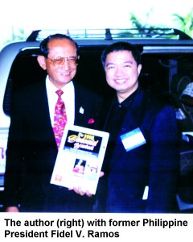
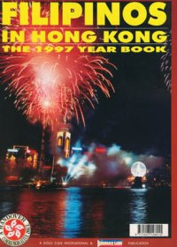
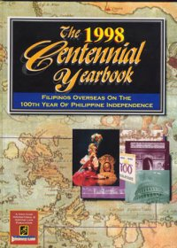

|
|

|
People Behind the Mga Bagong Bayani
Publisher and photojournalist Ricky R. Sadiosa got his education from the Ateneo de Naga University. He is author of the only yearbook published for Filipinos in Hong Kong entitled Filipinos In Hong Kong which was printed in 1997. He dedicated this yearbook to Hong Kong's handover to China. With more than 200 pages, Filipinos In Hong Kong can be read in public libraries in Hong Kong and in the Philippines. Philippine Daily Inquirer, the Philippines' largest daily newspaper, has featured Mr. Sadiosa's documentary team in its June 1, 2000 issue. Hong Kong's English newspaper, Hong Kong iMail, ran a three-whole-page feature of Mr. Sadiosa and his upcoming Mga Bagong Bayani yearbook. Hong Kong's RTHK, a television from Taiwan, and a French documentary production have featured him in their respective TV documentary series in 1996, 1997 and 1998. He ran his FREE monthly Filipino newspaper, Philippine Global News (PGN) and Gintong Lahi (Golden Race) magazine in Hong Kong for ten years. In 1998, he published the only coffee-table yearbook, The 1998 Centennial Yearbook, in commemoration of the Philippines' 100th year of independence, featuring Filipino achievers in more than 18 countries. He also co-publishes BERITA INDONESIA, a monthly Indonesian broadsheet newspaper catering to more than 100,000 Indonesian workers in Hong Kong.


Currently, Mr. Sadiosa is a program host of Good Afternoon Kabayan (GAK) at the Interactive TV Cable 27 (www.tictv.com), and Good Evening Kabayan (GEK) AM864 radio (www.gekabayan.com) which can be heard in Hong Kong, Macau and China. GEK initiated the very first OFW relief operations of the recent Leyte landslide disaster overseas. It has collected more than P500,000.00 and more than 15 jumbo door-to-door cargo boxes of relief food and clothing which Mr. Sadiosa personally delivered to the affected families sheltered at Cristo Rey Memorial High School in St. Bernard, Leyte. Susan K, host of Bantay OCW NBN4, helped documented the operations.
French-Canadian Pierre Tremblay is a veteran television director and producer in various Asian television channels. He has been working with Radio Television Hong Kong (RTHK) and has been directing television documentaries for many years. He has directed various music videos with A Channel and MTV Asia. Pierre and his wife Genuina have been working with Mr. Sadiosa on the video part(DVD format) of the Mga Bagong Bayani documentary since 1997. He and his family moved to Quebec, Canada in December of 2000.
Eric C. Cachero is an international award-winning graphic web designer. He recently won the most coveted Golden Web Award from the United States in December 2001. He is currently President and CEO of eCentral.
Toton B. Roque travels with Mr. Sadiosa in the Middle East and other parts of the world as an assistant and writer.
Teresa Arcilla, a consistent journalism scholar at the University of the Asia and Pacific in the Philippines, travels with Mr. Sadiosa in the United States and Australia and handles the youth part of the interviews. She finished her journalism at the UAP in 2002.
Samson Rivo, a photo-journalist volunteer, helps Mr. Sadiosa in various photo-shoots in Hong Kong and in the Philippines. He is currently based in the Philippines.
Estelita Ferrera-Brunner, sole authorized Philippine representative.
Support Group
- Boogie C. Boydon
- Ingrid F. Dimaculangan
- Jed L. Villanueva
- Engr. Edwin G. Ferrera
|
|
|
|
|
|